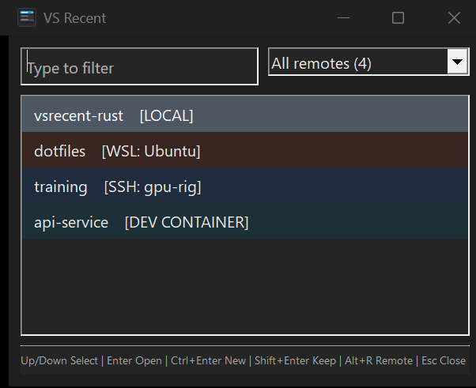

C# WinForms and Rust Win32
Why the Rust version starts faster
VS Recent is a small Windows picker for folders in VS Code's Open Recent history. It is designed to appear as soon as the user presses a taskbar shortcut, accept a few filter characters, and open the selected folder.
The first implementation used C# and WinForms. Version 0.5.0 replaced it with Rust and direct Win32 calls to reduce the delay between starting the process and seeing the picker.
The C# version usually took 359-390 ms to show its first window. The Rust version took 63-85 ms on the same machine. Rust starts less software, and the app now paints its window before reading VS Code history.
The new window appears about five times sooner and stays below the commonly used 100 ms limit for an interaction to feel immediate.


I want this to display immediately when I hit a hotkey, so that I can open a vscode folder.
Measured startup time
The chart uses a 0-400 ms scale. The dashed line marks 100 ms. Jakob Nielsen describes 100 ms as roughly the limit at which a system still feels like it reacts instantly.
Source for the 100 ms guideline: Jakob Nielsen, Response Times: The 3 Important Limits. The VS Recent ranges came from warm startup tests during the Rust migration.
Short answer
The old executable included the .NET runtime and WinForms. Windows first started the .NET host, which then started CoreCLR and prepared managed code. The program read SQLite, parsed JSON, and built every recent-folder entry before it created the form.
The Rust executable is a small native Windows program. It creates the window and its controls directly with Win32, calls ShowWindow and UpdateWindow, and then starts history loading on another thread. The user sees the picker while the database work finishes.
The improvement comes from both changes. Native code removes the managed runtime startup cost. Moving history loading after first paint removes unrelated work from the path that the user waits on.
What the C# version did before showing a window
- Start the .NET application host.The self-contained executable locates its embedded runtime and prepares CoreCLR.
- Start managed execution.The runtime sets up managed code support, metadata, garbage collection, assembly loading, and any required JIT compilation.
- Initialize WinForms.The program enables visual styles, sets DPI behavior, and loads the WinForms application layer.
- Read VS Code history.
LoadEntries()opens SQLite and reads the recent-folder JSON on the main thread. - Parse and prepare every entry.The program parses JSON, classifies remote URIs, creates labels, and builds lowercase search text.
- Build the form.The constructor creates managed controls, panels, fonts, layout rules, event handlers, accessibility properties, and drawing state.
- Start the message loop and paint.
Application.Run(form)finally allows the form to create its native handles and appear.
What the Rust version does before showing a window
- Map a native executable.Windows loads a roughly 250 KB PE file. There is no managed runtime or garbage collector to start.
- Set basic process options.The app sets DPI awareness, initializes common controls, reads the theme, and creates a named mutex for single-instance behavior.
- Create the window and controls.The app calls Win32 directly for the edit box, remote dropdown, list, separator, and footer.
- Paint the picker.
ShowWindowandUpdateWindowdisplay a usable shell with a loading row. - Load history in the background.A worker opens SQLite, parses JSON, prepares entries, and posts the completed list back to the window.
Where the time changed
| Part | C# version | Rust version | Effect |
|---|---|---|---|
| Runtime | Starts CoreCLR and managed execution support. | Runs native machine code directly. | Rust has less process setup before application code runs. |
| UI layer | Creates a WinForms object tree, then creates native handles and performs layout. | Creates the required Win32 controls directly. | Rust skips most of the framework object and layout work. |
| History loading | Runs on the UI thread before the form exists. | Runs on a worker after the first paint. | Database speed no longer controls when the window appears. |
| JSON | Uses System.Text.Json before form creation. |
Uses serde_json after first paint. |
The timing of the work matters more here than the parser choice. |
| Release size | 50.4 MB for x64 and 49.6 MB for ARM64. | 250 KB for x64 and 236 KB for ARM64. | The loader, filesystem cache, and antivirus scanner see a much smaller image. |
Why the old executable was much larger
The C# build used --self-contained=true. It included the .NET runtime so users did not need to install .NET. It also enabled single-file compression and included native libraries for extraction. This made installation easy. The process still had to find and start the embedded runtime. A first launch could also include extraction and antivirus work.
The Rust build links the Rust code and JSON parser into a small native executable. It uses Windows system DLLs for windows, drawing, SQLite, and launching VS Code. Its release settings enable link-time optimization, remove symbols, optimize for size, and abort on panic.
Windows does not read every byte of an executable at startup, so file size is not a direct timer. The roughly 200x size difference still shows how much runtime and framework material the old package carried.
What stayed the same
- Both versions use Windows
winsqlite3.dlland open the database read-only. - Both copy the database, WAL, and SHM files to a temporary directory if the live database cannot be read safely.
- Both parse the same recent-folder JSON and preserve local and remote folder URIs.
- Both classify remotes and build lowercase text used by the filter.
- Both launch VS Code with
--folder-uri.
SQLite and entry preparation did not disappear. The Rust app moved them until after the first frame.
How to read the numbers
Warm startup
The 359-390 ms and 63-85 ms ranges came from repeated warm launches. Warm tests match the normal taskbar workflow: open the picker, use it, close it, and open it again later. They also reduce noise from disk caches and first-time extraction.
Cold startup
A launch after reboot can include disk reads, Defender scanning, and first-time extraction. Those costs vary between machines. The old 50 MB bundle gives those systems more work than the small native executable, so cold starts may show a wider gap.
First window versus loaded entries
The benchmark stops when the window appears. The Rust list may still say "Loading recent folders..." for a short time. A separate entries-ready measurement would be needed to compare full data-loading time. This page focuses on the delay the user feels after pressing the launch shortcut.
Current startup check
The branch that adds single-instance activation and UI fixes was compared with main using 50 interleaved ARM64 runs after five warmups. main measured 66.18 ms median and 73.35 ms p95. The branch measured 66.99 ms median and 74.84 ms p95. The median difference was 0.81 ms.
The tradeoff
WinForms handled layout, events, control lifetime, accessibility, DPI scaling, and much of the drawing work. The Rust version handles native window messages, GDI objects, raw handles, DPI changes, theming, and cleanup itself. That code is harder to write and review.
A C# version could also improve its first paint by showing an empty form before loading history. The Rust version would still avoid CoreCLR and WinForms startup, but the order of work explains a large part of the difference users see.
Sources
- C# startup and WinForms code at commit 82287a1
- C# publish settings
- Current Rust startup and background loader
- Rust dependencies and release settings
- v0.4.0 release sizes and v0.5.0 release sizes
- Nielsen Norman Group response-time limits
The migration benchmark measured total startup-to-first-window time. It did not trace each phase separately, so this page does not assign a millisecond value to individual runtime, UI, database, or parsing steps.